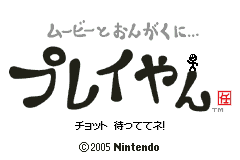

Play-Yan (Japan)
Stateless / Passcode 🔌 Play-Yan (AGB-006)
Cartridge Identity
- Game Code
ZMAJ(FamilyZMA)- Header Title
PLAYAN- Maker / Revision
01/ rev0- ROM Size
- 1.0 MiB (1,048,576 B)
- Save Media
None / Unknown- SHA-256
dafc062def38af51534d1738be2fb0646c58b0d60dec8daa25754b8b97af050a
Screenshots


Niche & Rare Accessories
Detected niche/rare GBA accessory support: 🔌 Play-Yan (AGB-006).
Full 343-ROM corpus breakdown in the Cartridge Hardware & Niche Accessories Reference · auto-detected from ROM bytes via
gbakit inspect.
- Play-Yan (AGB-006)
- Official Nintendo SD-card MP3/MPEG-4 player cartridge firmware (Nucleus RTOS)
Cartridge Storage Architecture: Stateless / Passcode
Zero non-volatile battery hardware: This cartridge PCB contains ROM only (no SRAM, Flash, or EEPROM chips). Progression is preserved via on-screen passcodes or session-only gameplay. No
.sav file is generated or required.
Asset Map (formatkit.asset-map.v1)
Download ZMAJ-r0-dafc062def38af51.asset-map.json.gz (1,301 B (1.3 KiB)) Verified PASS · 2.18% coverage
| Metric | Bytes / Value | Entries |
|---|---|---|
| Identified | 288 B (0.03%) | 4 |
| Mapped | 0 B (0.00%) | 0 |
| Opaque | 22,616 B (22.1 KiB) (2.16%) | 1 |
| Unknown | 1,025,672 B (1001.6 KiB) (97.82%) | 4 |
| Total ROM Size | 1,048,576 B (1.00 MiB) | 9 |
| Coverage % | 2.18% | — |
| Entries w/ Code Refs | 4 / 9 (44.44%) | — |
Top Identified Formats: gba.rom-header (1 · 192 B) · gfx.gba-palette (3 · 96 B)
Largest unknown Extents (Headerless / Custom Asset Candidates)
| Offset | Size | Shannon Entropy | Code Refs |
|---|---|---|---|
0x000000C0 | 458,560 B (447.8 KiB) | 6.283 bits/B | 0 |
0x00090828 | 434,048 B (423.9 KiB) | 5.478 bits/B | 0 |
0x00070020 | 69,616 B (68.0 KiB) | 6.926 bits/B | 0 |
0x00081030 | 63,448 B (62.0 KiB) | 7.427 bits/B | 0 |
gzip -dk ZMAJ-r0-dafc062def38af51.asset-map.json.gz && gbakit map verify rom.gba ZMAJ-r0-dafc062def38af51.asset-map.json
gbakit assets export rom.gba --asset-map ZMAJ-r0-dafc062def38af51.asset-map.json -o out/Text, Fonts & Scene Data
- Primary Text Encoding
- Plain ASCII (uncompressed) (
244ASCII strings ·13Shift-JIS runs) - Font & VWF Indicators
- VWF Width Table 1bpp Font · BIOS SWIs: BitUnPack
0x10:0· LZ770x11/12:0· Huffman0x13:0· RLE0x14/15:1 - Scene & Packaging
0ROM pointer tables (≥32 entries,0≥200) ·2relativeu32TOCs ·296OAM metasprite hits